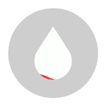

Você sabia que se todas as pessoas que atendem os critérios para serem doadores de sangue no Brasil, doassem sangue duas
duas vezes ao ano de forma espontânea, nossos hemocentros jamais sofreriam com escasez de nenhum tipo sanguíneo?
Com apenas 450 ml de sangue você pode se tornar o herói de várias vidas!
A doação de sangue é constitui-se pera retirada de 450ml de sangue através de uma agulha. Todo o procedimento da coleta é feita por profissionais capacitados e acontece somente sob a supervisão de um médico ou funcionário. O processo dura cerca de uma hora, não é doloroso e tampouco prejudica a saúde.
Leve seu documento com foto emitido por órgão oficial: RG, carteira de motorista, carteira profissional e entre outros. Procure evitar o jejum, principalmente um dia antes do exame, pode lhe causar fraqueza após o procedimento. Por fim, evite vir acompanhado de crianças ou sozinho.
Não fume nas primeiras duas horas após a doação,não pratique exercícios físicos e tampouco dirija.Deves permanecer no serviço homoterápico após a doação por 15 minutos e evite, durante todo o dia doação, dobrar o braço onde foi realizada apunção.Isso evita sangramentos e hematomas.Retire o curativo 4 horas após a doação
Doação Espontânea: como o próprio nome já diz, é uma doação feita de maneira espontânea, com objetivo de ajudar o próximo. Já a Doação Vinculada: é vinculada a alguma pessoa em específico. Se o seu objetivo é doar para algum familiar ou amigo, esta é a melhor opção. E por fim, temos a Doação Autóloga: doar para si mesmo